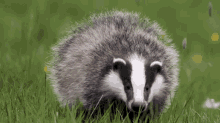
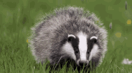
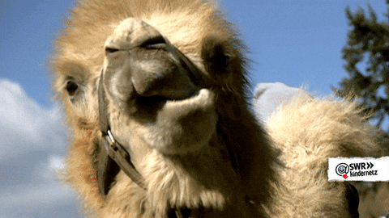
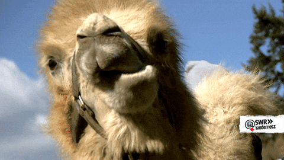
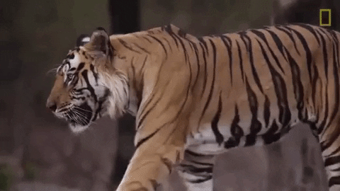
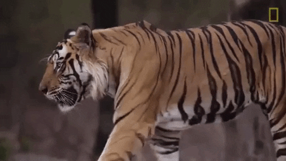

Chamäleons sind faszinierende Reptilien, die für ihre Fähigkeit bekannt sind, die Hautfarbe zu ändern und sich an ihre Umgebung anzupassen. Sie nutzen ihre lange, klebrige Zunge, um Insekten zu fangen, und ihre unabhängigen Augen ermöglichen ihnen, gleichzeitig in zwei Richtungen zu sehen. Chamäleons sind meist langsam, aber ihre Tarnfähigkeit macht sie nahezu unsichtbar für Feinde.


 



 



 
